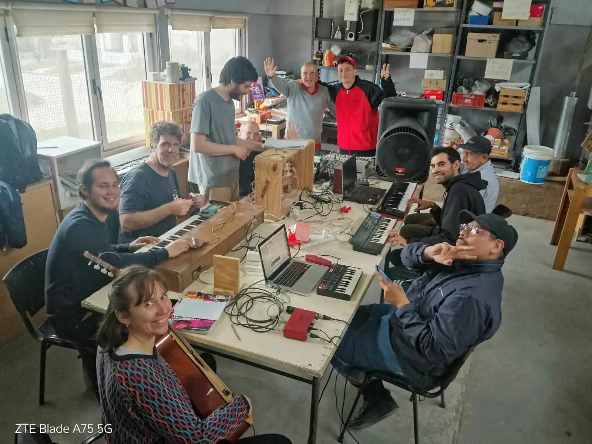

El taller

En el taller laboratorio de música electrónica se compone, interpreta y experimenta y también se construyen y/o modifican instrumentos musicales. El taller funciona en en Casa Caracol desde el 2020 (en ese entonces se llamaba taller de luthería electrónica) como un experimento en el cual se construían pequeños teclados hechos con pulsadores y un 555. Luego nos fuimos embarcando en distintos proyectos, como la construccion de un sintetizador modular CMOS (o Lunetta ) A partir del 2025 comenzamos a explorar con la modificacion de instrumentos/juguetes (o circuit bending)